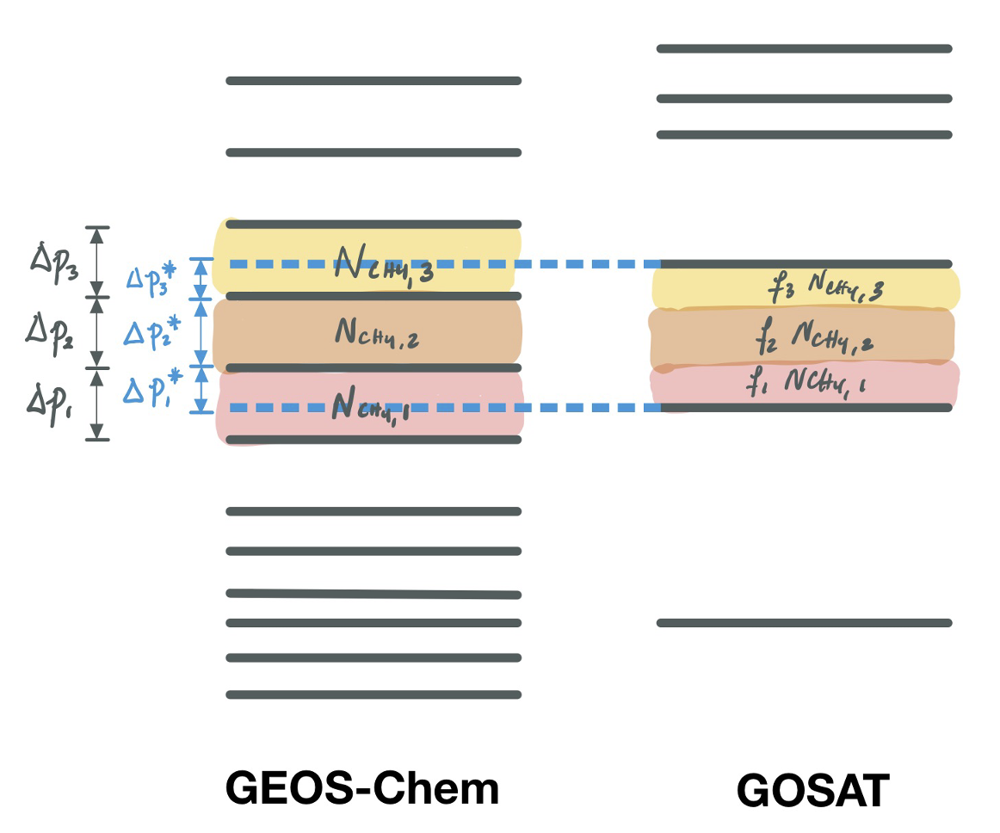

GOOPy: mass-conserving vertical interpolation for satellites
GOOPy (General Observation Operator in Python) facilitates comparisons of model and satellite data by sampling the GEOS-Chem model atmosphere in the same manner as satellite observations sample the real atmosphere.
A major advantage of GOOPy is that it includes a class for mass-conserving vertical interpolation between model and satellite levels. Interpolating between vertical grids is a problem which comes up constantly in comparing satellite observations with model simulations. We usually want this interpolation to be mass-conserving, which means that simple solutions (such as using np.interp) are not suitable.
We also offer an option to add custom satellite operators on top of this interpolation to facilitate easy comparisons between satellite and model data.
(This project is equally authored with Hannah Nesser.)

Illustration of the first step of GOOPy's mass-conserving interpolation between a model profile (GEOS-Chem) and a satellite profile (GOSAT).
Contributions to Wisconsin Horizontal Interpolation Program for Satellites (WHIPS)
WHIPS is an open-source Python package which regrids level-2 satellite data (irregular overlapping polygons) to level-3 data (gridded data). It supports a number of satellite products including NASA OMI NO2 and MOPPIT CO. I added a new regridding function based on the OMNO2d gridding algorithm, and the ability to read in KNMI GOME-2 NO2 data.
Unpublished Work
Evaluating GFDL AM-4 simulations of NO2 with OMI satellite observations
Penn, E.; Horowitz, L.W.; Naik, V. (2017) Evaluation of GFDL-AM4 simulations of nitrogen oxides with OMI satellite observations. American Geophysical Union Fall Meeting 2017. New Orleans, LA. (poster)
Penn, E. Horowitz, L.W.; Naik, V., Holloway, T. (2017) Evaluation of GFDL-AM4 simulations of nitrogen oxides with OMI satellite observations. HAQAST3 Meeting (Health and Air Quality Applied Sciences Team). Columbia University, New York, NY (poster)
Predicting wind plant power production
Penn, E. and Newman, J. A New Toolbox for Operational Wind Data. (2017) Presentation. American Meteorological Society Annual Meeting 2017. Seattle, WA. (presentation)